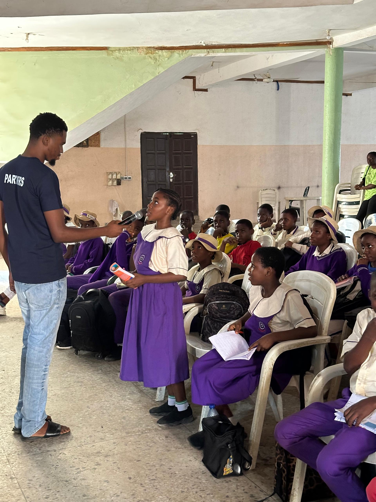

Our History
TechCon started in 2010 as a small local meetup for developers. Over the years, it has grown into one of the most anticipated international tech conferences, attracting innovators and experts from all over the globe.
TechCon started in 2010 as a small local meetup for developers. Over the years, it has grown into one of the most anticipated international tech conferences, attracting innovators and experts from all over the globe.
Our mission is to foster collaboration, inspire innovation, and empower the global tech community through inclusive and forward-thinking discussions.
Jane is a pioneer in Artificial Intelligence and delivered a keynote on ethical AI in 2021.
Ali spoke on the future of scalable infrastructure in 2022, sharing insights from his work at a leading cloud firm.
Maria addressed cybersecurity challenges for startups during the 2023 edition of TechCon.